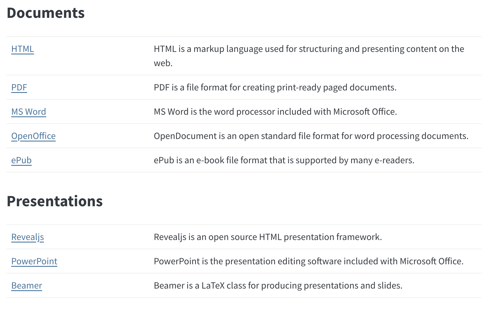

It allows you to effortlessly generate documents that can print both R codes and their outcomes (this lecture note is indeed written using Quarto) in a single document.
It is useful when you report the analysis you conducted and its source R codes to your advisor or anyone you report to (as long as that person understands R).
The power of Quarto goes well beyond just creating a simple html document. The full power of Quarto is on display here.
Quarto Installation
Visit here.
It would be a real pain to do so because you need to copy and paste all the R codes you run and the results onto WORD manually.
Often times, copied R codes and results are very much likely to be badly formatted when pasting them
Quarto obviates the need of repeating copying and pasting when you would like to communicate what you did (R codes) and what you found (results) without worrying too much about formatting.
Generating a report using Quarto is a two-step process:
Create an Quarto file (file with .qmd as an extension) with regular texts and R codes mixed inside it.
Tell the computer to process the qmd file (a click of a button on RStudio, or use the render() function)
A qmd file would consist of two types of inputs:
Direction
Take a look at sample_qmd.qmd, which can be downloaded from here.
R codes summary(cars) and plot(pressure) are enclosed individually by the special syntax
So, in this qmd file, R knows that it should treat them as R codes, but not regular texts.
On the other hand, any texts that are not enclosed by the special syntax would be recognized as regular text.
The process of compiling an qmd file to produce a document is called rendering.
Inspect the qmd file and its output document:
qmd side
summary(cars) is an R code, which is enclosed by the special syntaxhtml side
You can refer to an R object previously defined in line and display its content in line:
Direction
See lines 41-51 of the qmd file
Direction
Compare the chapter called “Markdown basics” of the qmd file and its corresponding output in the rendered html file
When you render an qmd file and create a report, R creates an R session/environment that is completely independent of whatever R sessions or environments you may have on your RStudio.
This means that when you render an qmd file, you cannot refer to R objects you have defined on your current R session.
Chunk options are special codes inside R code chunks to control how the code chunks operate.
Here are some example options:
echoevalmessagewarningoutputincludecachefig.cap, fig-height, etcSee all the options here.
Inspect the qmd file and its output document and observe that
summary(cars), the code itself and its outcome are presented in the outputplot(pressure), only its outcome is presented in the outputThis is because of the chunk option echo: false in the second R code chunk
To set a chunk option, use the following syntax:
Example
echo ( true or false): specify whether the R codes appear in the output document or not
eval ( true or false): specify whether the R codes are evaluated or not
Direction
Inspect the qmd file (lines 75-103) and its output document to see their effects.
message (true or false ): specify weather messages associated with R codes evaluation appear in the output document or not
warning (true or false ): specify weather warnings associated with R codes evaluation appear in the output document or not
Direction
Inspect the qmd file (lines 107-131) and its output document
output ( true , false, asis)
true: pint all the results including warnings and messagesfalse: hides all the results including warnings and messagesasis: the outputs of the R codes are printed as-is without any suitable formattingDirection
Inspect the qmd file (lines 135-149) and its output document
include: false is equivalent to having eval: true, echo: false, and results: false
Direction
Inspect the qmd file (lines 153-166) and its output document
Chunk option for figure
fig.align: ‘default’, ‘center’, ‘left’, ‘right’fig.width: in inchesfig.height: in inchesfig.cap: figure captionDirection
Play with these options. See here for more chunk options.
Sometimes, it is useful to set chunk options that apply globally (for the entire documents).
For example,
echo: true is the default.echo: false for all the R code chunksYou can set chunk options globally in the YAML header with the execute option like below:
Important
Local option always overrides the global option.
In the course of creating a document using Quarto, You are going to hit the “Render” button numerous times when you are writing a report to check whether the final output looks fine.
Every time you render, all the R code chunks are evaluated, which is inefficient because R has evaluated those R code chunks before.
So, if we can somehow store the results of R code chunks (caching), and then let R call up the saved results instead of re-evaluating the codes all over again, we can save lots of time.
The benefit of doing so is greater when the processing time of the codes is longer. Caching can be done by adding cache==TRUE as a chunk option.
By adding the option, once an R chunk is processed, its results are saved and can be reused again by R later when you compile the document again.
Direction
eval: false to eval: true in the cache_1 chunkWhen any part of the R codes within a cached R code chunk is changed, R is smart enough to recognize the change and evaluate the R code chunk again without using the cached results for the chunk.
Direction
Change y = 1 + x + v to y = 1 + 2 * x +v in the cache_1 chunk and render
Sometimes, your R codes within an cached R code chunk have not changed, but the content of a dataset used in the R code chunk may have changed.
In such a case, R is unable to recognize the change in the content of the dataset.
Direction
eval: false to eval: true in the cache_2 chunk and rendery = 1 + 2 * x + v back to y = 1 + x +v and render (notice that the printed number from cache_2 did not change)cache_2 chunk looks the same as they only look at the code texts, but not the contents of R objects.dependson option to make R recognize any changes in cached R objectsDirection
Add dependson: cache_1 to the cache_2 chunk as an option and render again.
Suppose you are interested in reading a dataset file like this:
Important
By default, R looks for corn_price.csv in the same folder in which the qmd file is located.
In my case, the sample_qmd.qmd is located in /Users/taromieno/Library/CloudStorage/Dropbox/TeachingUNL/Data-Science-with-R-Quarto/Chapter-2-Quarto .
This means that RStudio tries to find /Users/taromieno/Library/CloudStorage/Dropbox/TeachingUNL/Data-Science-with-R-Quarto/Chapter-2-Quarto/corn_price.csv.
If the file is not in the directory, RStudio won’t be able to find the file to import and returns an error. Clearly, all the subsequent actions dependent on the dataset will not run.
To avoid errors in reading files, there are three options:
Option 1 (recommended for a beginner)
Put all the datasets you intend to use in the same directory in which your qmd file is located.
Option 2
If the file is not in the directory, supply the full path to the file like this
Option 3
Tell R to look for a specific directory for datasets by setting a working directory using opts_knit$set(root.dir = directory) at the beginning by adding the code like below in your qmd file after the YAML header:
You can render an qmd file to various formats using various engines (visit here to see all the document types).

Important
Step 1
To write to an output type you want, first add an appropriate options under the format option to the YAML header like below.
title: "Reporting using Quarto"
author: "Taro Mieno"
format:
html:
toc: true
toc-depth: 2
number-sections: true
number-depth: 2
docx: default
typst:
papersize: a5
margin:
x: 1cm
y: 1cm
columns: 2Here,
word option) is generated with the default options.typst option) is generated with the options specified below typst:.Direction
Add the docx option and typst options in the YAML above to your qmd file.
Step 2
You should see a downward triangle right to the “Render” button. Pick one format to render to a document of the format.
YAML and chunk options available are different based on the output format and engine. Visit here to see the options specific to particular formats.
The best resource to learn Quarto is its official website: